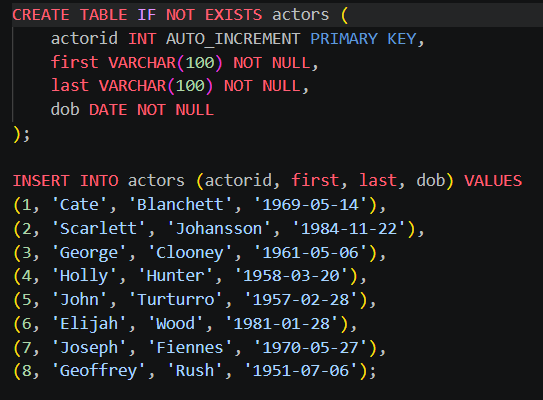
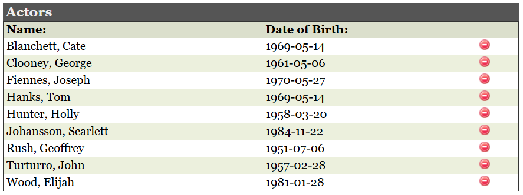
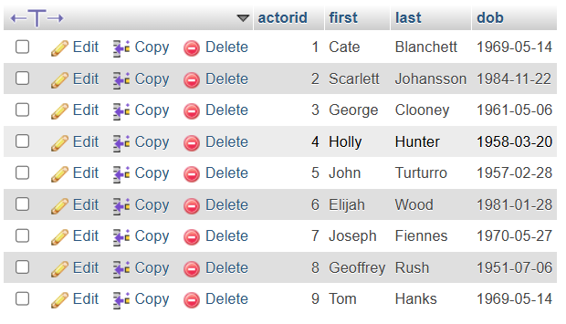

The sql file used to import and build the actors database. The purpose of this file is to initialize the database with the necessary tables and data.

The sql file used to import and build the actors database. The purpose of this file is to initialize the database with the necessary tables and data.

This is the physical actors database as it appears on the PHP page for lab9.

This is the updated labs page, dynamically generated using JSON data and Ajax.